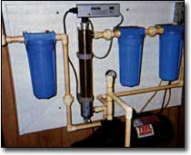
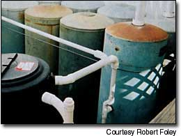

It's Raining I'm Storing
By Robert Foley
August/September 2003
How a master plumber harvests rain for his drinking water.
My subdivision's water originates from a typical Texas well, and it is hard with a capital "H" It also is expensive, and so heavily chlorinated that water from the kitchen faucet smells like that of a swimming pool. That's why I decided to build my own water system, trading in hard, chlorinated well water for soft, free rainwater. With our average annual rainfall of 31 inches, I knew I could collect 20,000 gallons a year from the rooftop of my small house.
I am a retired master plumber, so I had piping knowledge. I went to work to design a low-cost rainwater harvesting setup.
BUILDING THE SYSTEM
Rainwater harvesting begins with a simple idea: Rain gutters already are collecting the water that falls on your roof. To harvest that water, just set up the gutters so that instead of running onto the ground, the water flows into a storage tank, or cistern. It also is a good idea to put in a roof washer to divert the first few gallons of rain coming off the roof, along with any dust or bird droppings that water might be carrying. (For more about harvesting your rainwater, see Page 42.)
I was lucky enough to acquire some free storage tanks. A friend of mine is a water well contractor, and always has plenty of used pressure tanks. I was able to take eight of them off his hands for my project. Of course, they all had small holes in them, which meant they would no longer hold pressure, but for my use, that wasn't needed. All I did was patch the holes with a little metal epoxy so they would hold water.
Full tanks of water are very heavy, so I needed a good, solid foundation, or pad, to keep them stable. I used 8-foot landscape timbers to create a square form. and covered the area inside the square with plastic. I mixed one shovel of Portland cement to five shovels of sand, filled the whole area with this mix, tamped it, and then sprinkled it with water. It worked perfectly as a foundation for my tanks.
Each of my eight tanks holds 120 gallons. I hooked them together at the bottom with 1 1/4-inch PVC pipe, which allows water to flow back and forth just as though I had one big tank. Presto, I had 960 gallons of storage capacity. Later on, I added a commercially built poly tank. The cost of this tank was about $600, but I now have a total storage capacity of 2,510 gallons.
A simple 1/2-horsepower shallow-well jet pump and a 5-gallon pressure tank, set at 50 pounds per square inch, distribute my collected water. By priming the pump and plugging it in, I can use my supply of soft rainwater for many things. I can wash my truck (without water spots!), water the garden (I can make it "rain" anytime I want), and wash laundry and windows.
I went one step further and built a purification system that enables me to use rainwater for all my domestic needs, including drinking water. From the pressure tank, the water passes through a 25-micron filter, then into another canister with a 5-micron filter. After that, it flows through a high intensity ultraviolet light unit, which kills any remaining organisms. As a final step, I added a 5-micron carbon filter. This was slight overkill on "My filtered water is so clear that ice cubes almost look like diamonds." my part because rainwater already is very clean, but it did improve the water's taste. The whole system cost less than $1,400.
Before harvested rainwater is used for drinking, it should be tested by professionals. A good friend did this for me, but any local health department can do it. When my water was tested, it was cleaner than the city water! It also tastes great. My filtered water is crystal clear and makes the best coffee ever. It is so pure that ice cubes almost look like diamonds.
NOT WASHED AWAY
Last year, Bandera County was part of the big Texas flood. We got more than 24 inches of rain in a month. Homes less than 50 yards from me were washed away. I witnessed my neighbors' propane tanks, sofas and carports going right down the river in front of my eyes. An entire double-wide went by, too! There were deer and armadillos and other animals swimming for their lives.
When all those homes washed away, naturally the water and sewer lines were broken and the municipal drinking water was contaminated. People had to buy bottled water, and people with wells had to add chlorine. Believe me, the flood of 2002 was no joke.
Well, guess what? During that entire, horrifying experience, I could wake up, flush, get a shower and make coffee the same as I do every day! Life and water went on for me as usual. I also was able to help my neighbors out by giving them drinking water from my system. The more it rained, the more water I had.
Every drop of water entering our bodies was rainwater at one time or another. Harvesting rainwater is an interesting hobby, and it's easy to do. The quality of the water itself is a worthwhile investment. Remember: Mother Earth never sends a bill, and you soon get your money back!
For more information on how Robert Foley built his rainwater harvesting system, contact him at P.O. Box 2491; Bandera, TX 78003.
Mother Earth News
 To purify the water for drinking, it is pumped from a 5-gallon pressure tank (bottom of photo), through 25- and 5- micron filters (blue cylinders), then past a high intensity ultraviolet light (cylinder second from left) before flowing through a final carbon filter and into the house. |
 The roof gutters carry water down into a series of interconnected storage tanks. (The tanks must be impervious to light, otherwise algae will grow.) |
 |